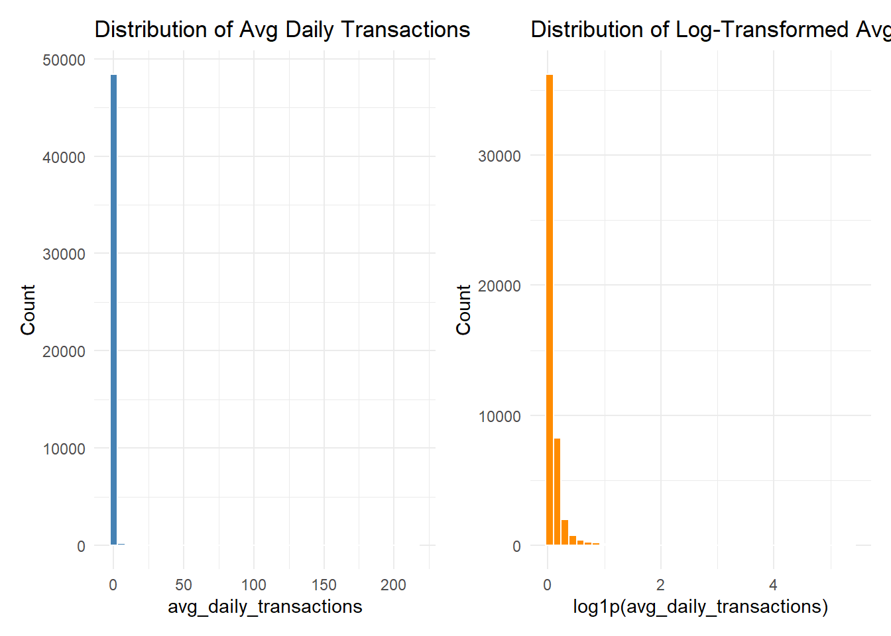
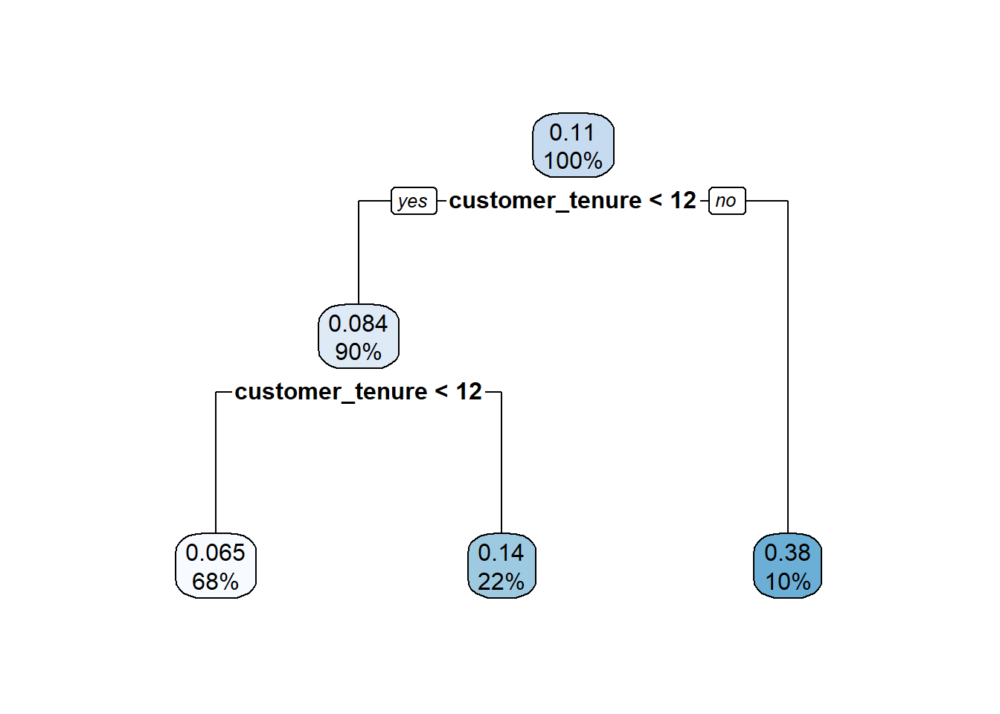
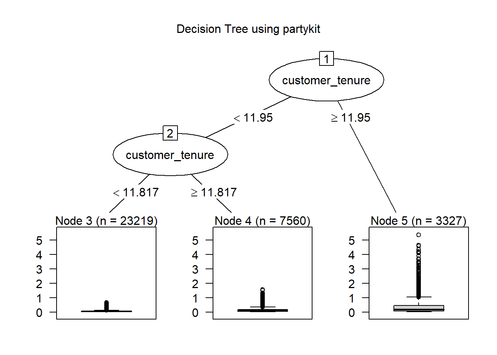
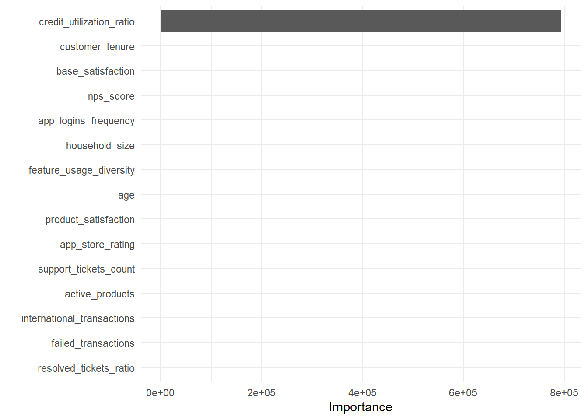
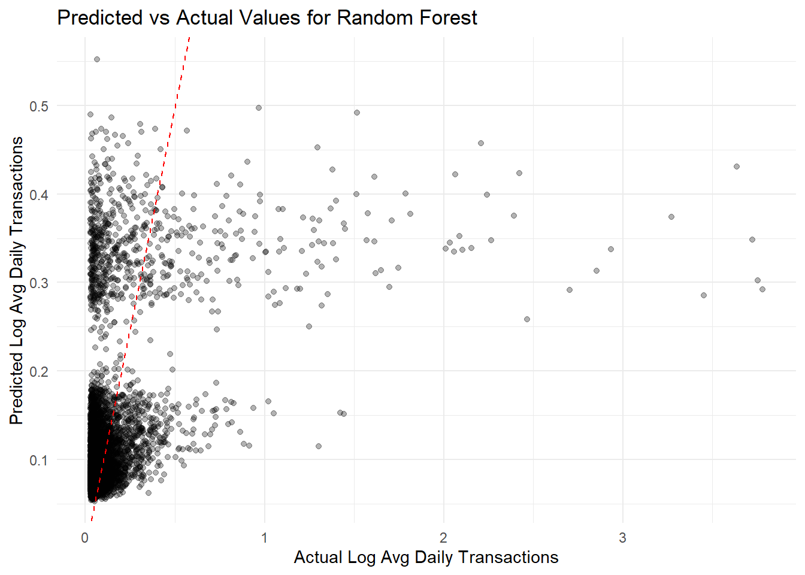
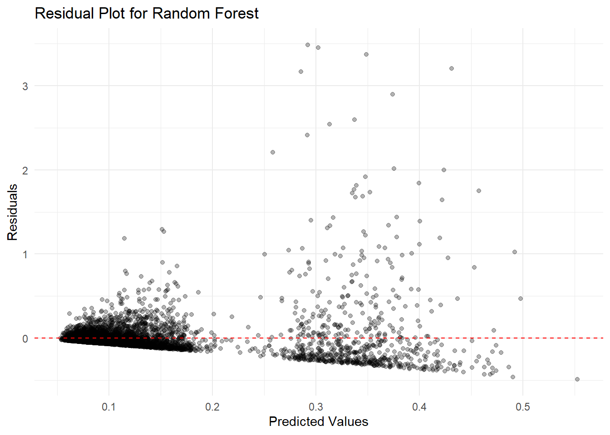

pacman::p_load(
tidyverse,
tidymodels,
lubridate,
vip,
rpart.plot,
corrplot,
patchwork,
scales,
caret,
doParallel,
partykit,
treeheatr,
vtree
)
tidymodels_prefer()
theme_set(theme_minimal())
set.seed(1234)Take Home Exercise 2B Prdeicting Customer Transaction Behaviour
1 Objective:
The objective of this project is to understand the behaviors behind customer transactions and how socio-demographic factors—such as age, income, and occupation—affect customer transactions. By applying statistical correlation techniques, we aim to identify which personal attributes are the true drivers of financial activity within the Colombian fintech ecosystem.
This analysis extends the exploratory study by developing predictive models to estimate customer financial activity within the Colombian fintech ecosystem. Instead of focusing on customer satisfaction, this stage models transaction behaviour, which more directly reflects financial engagement on the platform. Specifically, the study aims to predict the number of average transactions per day performed by each customer using demographic attributes, digital engagement indicators, and behavioural transaction features. By applying machine learning models such as Linear Regression, Decision Tree, and Random Forest, the analysis seeks to identify the key drivers of financial activity and evaluate the predictive capability of customer attributes in explaining transaction behaviour.
2 Load Packages
Several R packages are used in this analysis to support data manipulation, visualization, and predictive modelling. The tidyverse package is used for data cleaning and transformation, while lubridate assists with handling date and time variables in the transaction dataset. The tidymodels framework provides a unified environment for building and evaluating predictive models. Visualization packages such as corrplot, vip, and rpart.plot are used to produce visual analytics outputs, including correlation matrices, feature importance plots, and decision tree diagrams. These packages collectively support the implementation of the modelling workflow and the generation of interpretable visual insights.
3 Loading Dataset
The COFINFAD (Colombian Fintech Financial Analytics Dataset) consists of two relational datasets provided in CSV format.
The first dataset, customer_data.csv, contains customer-level information for 48,723 individuals, including demographic attributes, product usage indicators, satisfaction metrics, and aggregated behavioral variables.
The second dataset, transactions_data.csv, contains 3,159,157 transaction records collected over a 12-month period in 2023, capturing individual transaction events such as transaction amount, transaction date, and transaction type.
Both datasets are linked through a common identifier, customer_id, which serves as the primary key in the customer dataset and as a foreign key in the transaction dataset.
In this analysis, the datasets are loaded into the environment using the readr package, after which transaction-level data can be aggregated and merged with the customer-level dataset for further modelling and analysis.
customer_data <- read_csv("data/customer_data.csv")4 Data Preparation
The first step is to remove observations with missing target values and ensure the transaction date field is in a proper date format.
customer_data_clean <- customer_data %>%
filter(!is.na(avg_daily_transactions))4.1 Inspect Dataset Structure
glimpse(customer_data_clean)Rows: 48,723
Columns: 54
$ customer_id <dbl> 93716481, 49020929, 52690950, 23199751, 619…
$ age <dbl> 44, 44, 45, 45, 44, 45, 44, 44, 45, 44, 44,…
$ gender <chr> "Male", "Male", "Male", "Male", "Female", "…
$ location <chr> "Pereira, Risaralda", "Cali, Valle del Cauc…
$ income_bracket <chr> "Very High", "Medium", "High", "High", "Med…
$ occupation <chr> "Engineer", "Construction Worker", "Constru…
$ education_level <chr> "Master", "Bachelor", "Bachelor", "High Sch…
$ marital_status <chr> "Married", "Married", "Married", "Single", …
$ household_size <dbl> 5, 2, 4, 2, 3, 4, 4, 3, 1, 3, 5, 3, 3, 7, 3…
$ acquisition_channel <chr> "Partnership", "Paid Ad", "Paid Ad", "Refer…
$ customer_segment <chr> "occasional", "regular", "inactive", "inact…
$ savings_account <lgl> TRUE, TRUE, TRUE, TRUE, TRUE, TRUE, TRUE, T…
$ credit_card <lgl> TRUE, FALSE, FALSE, FALSE, TRUE, TRUE, TRUE…
$ personal_loan <lgl> FALSE, FALSE, FALSE, FALSE, FALSE, FALSE, F…
$ investment_account <lgl> FALSE, FALSE, TRUE, TRUE, FALSE, TRUE, FALS…
$ insurance_product <lgl> TRUE, FALSE, TRUE, FALSE, FALSE, FALSE, FAL…
$ active_products <dbl> 1, 5, 3, 2, 1, 1, 1, 4, 2, 3, 1, 5, 3, 1, 1…
$ app_logins_frequency <dbl> 15, 30, 4, 15, 19, 15, 44, 22, 7, 11, 7, 30…
$ feature_usage_diversity <dbl> 3, 0, 4, 4, 1, 4, 6, 1, 1, 6, 3, 1, 2, 1, 3…
$ bill_payment_user <lgl> FALSE, TRUE, TRUE, TRUE, FALSE, TRUE, TRUE,…
$ auto_savings_enabled <lgl> FALSE, FALSE, FALSE, FALSE, FALSE, TRUE, FA…
$ credit_utilization_ratio <dbl> 0.17871029, NA, NA, NA, 0.40360553, 0.07786…
$ international_transactions <dbl> 1, 1, 1, 1, 0, 0, 0, 0, 0, 1, 0, 0, 0, 1, 0…
$ failed_transactions <dbl> 0, 0, 0, 1, 0, 0, 1, 1, 0, 0, 1, 0, 0, 1, 0…
$ tx_count <dbl> 76, 10, 10, 23, 18, 15, 24, 45, 134, 13, 18…
$ avg_tx_value <dbl> 1679872.4, 5445810.0, 640335.0, 660180.4, 1…
$ total_tx_volume <dbl> 127670300, 54458100, 6403350, 15184150, 262…
$ first_tx <chr> "5/1/2023", "5/2/2023", "31/1/2023", "10/1/…
$ last_tx <chr> "25/12/2023", "20/12/2023", "12/12/2023", "…
$ base_satisfaction <dbl> 9.213372, 6.073093, 8.198643, 7.529577, 6.6…
$ tx_satisfaction <dbl> 0.380, 0.050, 0.050, 0.115, 0.090, 0.075, 0…
$ product_satisfaction <dbl> 0.6, 0.2, 0.6, 0.4, 0.4, 0.6, 0.4, 0.4, 0.6…
$ satisfaction_score <dbl> 5, 3, 4, 4, 3, 4, 4, 4, 5, 4, 4, 5, 4, 3, 4…
$ nps_score <dbl> -7, -46, -29, -31, -47, -29, -34, -36, -4, …
$ last_survey_date <chr> "16/12/2023", "5/5/2023", "16/11/2023", "7/…
$ support_tickets_count <dbl> 1, 1, 0, 2, 2, 1, 1, 0, 2, 0, 0, 2, 3, 1, 0…
$ resolved_tickets_ratio <dbl> 0.0000000, 1.0000000, 0.0000000, 0.5000000,…
$ app_store_rating <dbl> 3.5, 4.0, 5.0, 4.5, 4.0, 4.0, 5.0, 4.5, 4.5…
$ feedback_sentiment <chr> "Neutral", "Positive", "Positive", "Positiv…
$ feature_requests <chr> "Budgeting tools", NA, NA, "Cryptocurrency …
$ complaint_topics <chr> NA, NA, NA, NA, "App performance", NA, NA, …
$ clv_segment <chr> "Gold", "Bronze", "Gold", "Bronze", "Gold",…
$ monthly_transaction_count <dbl> 1.428571, 1.571429, 2.500000, 1.555556, 2.1…
$ average_transaction_value <dbl> 6054025.0, 2127413.6, 3575915.0, 1513353.6,…
$ total_transaction_volume <dbl> 60540250, 23401550, 35759150, 21186950, 116…
$ transaction_frequency <dbl> 0.03076923, 0.03293413, 0.05000000, 0.04778…
$ last_transaction_date <chr> "5/12/2023", "18/12/2023", "27/10/2023", "3…
$ preferred_transaction_type <chr> "Transfer", "Transfer", "Transfer", "Transf…
$ first_transaction_date <chr> "5/1/2023", "5/2/2023", "31/1/2023", "10/1/…
$ weekend_transaction_ratio <dbl> 0.30000000, 0.18181818, 0.30000000, 0.14285…
$ avg_daily_transactions <dbl> 0.03076923, 0.03293413, 0.05000000, 0.04778…
$ customer_tenure <dbl> 11.633333, 11.500000, 8.766667, 10.733333, …
$ churn_probability <dbl> 0.3622688, 0.1817896, 0.3212651, 0.3366287,…
$ customer_lifetime_value <dbl> 312414808, 167022286, 19403711, 35978105, 3…4.2 Target Variable Distribution
Before building predictive models, it is important to examine the distribution of the target variable.
customer_data_clean %>%
summarise(
min = min(avg_daily_transactions),
mean = mean(avg_daily_transactions),
median = median(avg_daily_transactions),
max = max(avg_daily_transactions),
sd = sd(avg_daily_transactions)
)# A tibble: 1 × 5
min mean median max sd
<dbl> <dbl> <dbl> <dbl> <dbl>
1 0.0279 0.187 0.0576 216. 1.70# Create modelling dataset with log-transformed target
customer_model_data <- customer_data_clean %>%
mutate(
log_avg_daily_transactions = log1p(avg_daily_transactions)
)4.3 Distribution of Original and Log-Transformed Target
To confirm whether the transformation improves the distributional shape, we compare the original and transformed target using histograms and summary statistics.
# Summary statistics for original target
customer_model_data %>%
summarise(
min_target = min(avg_daily_transactions, na.rm = TRUE),
mean_target = mean(avg_daily_transactions, na.rm = TRUE),
median_target = median(avg_daily_transactions, na.rm = TRUE),
max_target = max(avg_daily_transactions, na.rm = TRUE),
sd_target = sd(avg_daily_transactions, na.rm = TRUE)
)# A tibble: 1 × 5
min_target mean_target median_target max_target sd_target
<dbl> <dbl> <dbl> <dbl> <dbl>
1 0.0279 0.187 0.0576 216. 1.70# Summary statistics for log-transformed target
customer_model_data %>%
summarise(
min_log = min(log_avg_daily_transactions, na.rm = TRUE),
mean_log = mean(log_avg_daily_transactions, na.rm = TRUE),
median_log = median(log_avg_daily_transactions, na.rm = TRUE),
max_log = max(log_avg_daily_transactions, na.rm = TRUE),
sd_log = sd(log_avg_daily_transactions, na.rm = TRUE)
)# A tibble: 1 × 5
min_log mean_log median_log max_log sd_log
<dbl> <dbl> <dbl> <dbl> <dbl>
1 0.0275 0.113 0.0560 5.38 0.214# Histogram: original target
p1 <- ggplot(customer_model_data, aes(x = avg_daily_transactions)) +
geom_histogram(bins = 40, fill = "steelblue", color = "white") +
scale_x_continuous(labels = comma) +
labs(
title = "Distribution of Avg Daily Transactions",
x = "avg_daily_transactions",
y = "Count"
) +
theme_minimal()
# Histogram: log-transformed target
p2 <- ggplot(customer_model_data, aes(x = log_avg_daily_transactions)) +
geom_histogram(bins = 40, fill = "darkorange", color = "white") +
labs(
title = "Distribution of Log-Transformed Avg Daily Transactions",
x = "log1p(avg_daily_transactions)",
y = "Count"
) +
theme_minimal()
p1 + p2
The target variable avg_daily_transactions exhibited strong right skewness, with the majority of customers performing very few daily transactions while a small number of users generated extremely high values. Such skewness can negatively affect predictive modelling by allowing extreme observations to dominate model estimation. To mitigate this issue, a logarithmic transformation was applied using log1p(avg_daily_transactions), which compresses large values while preserving zero observations. The resulting distribution shows a substantially reduced skewness and a more stable range suitable for regression-based modelling.
5 Feature Selection
Before building predictive models, it is necessary to select appropriate predictor variables. Certain variables in the dataset directly summarize transaction activity (such as transaction counts or transaction volumes). Including such variables would introduce data leakage, because they are mathematically related to the target variable avg_daily_transactions.
To avoid this issue, only demographic attributes, product ownership indicators, digital engagement metrics, and customer experience variables are retained as predictors.
selected_vars <- c(
"age",
"gender",
"income_bracket",
"occupation",
"education_level",
"marital_status",
"household_size",
"customer_segment",
"acquisition_channel",
"customer_tenure",
"savings_account",
"credit_card",
"personal_loan",
"investment_account",
"insurance_product",
"active_products",
"app_logins_frequency",
"feature_usage_diversity",
"bill_payment_user",
"auto_savings_enabled",
"credit_utilization_ratio",
"international_transactions",
"failed_transactions",
"base_satisfaction",
"product_satisfaction",
"satisfaction_score",
"nps_score",
"support_tickets_count",
"resolved_tickets_ratio",
"app_store_rating",
"feedback_sentiment",
"feature_requests"
)
model_data <- customer_model_data %>%
select(all_of(selected_vars), log_avg_daily_transactions)6 Data Splitting
To ensure reliable evaluation, the dataset is divided into three subsets:
- Training set (70%) – used to train the models
- Validation set (15%) – used for hyperparameter tuning
- Test set (15%) – used for final model evaluation
set.seed(1234)
data_split <- initial_split(model_data, prop = 0.70)
train_data <- training(data_split)
temp_data <- testing(data_split)
validation_split <- initial_split(temp_data, prop = 0.50)
validation_data <- training(validation_split)
test_data <- testing(validation_split)7 Preprocessing Recipe
A preprocessing recipe is created using the tidymodels recipe framework. This step prepares the dataset for modelling by encoding categorical variables and removing predictors with near-zero variance.
rec <- recipe(log_avg_daily_transactions ~ ., data = train_data) %>%
step_unknown(all_nominal_predictors()) %>%
step_novel(all_nominal_predictors()) %>%
step_dummy(all_nominal_predictors()) %>%
step_zv(all_predictors())8 Linear Regression Model
Linear regression is used as a baseline model to estimate the relationship between customer attributes and transaction activity.
lm_model <- linear_reg() %>%
set_engine("lm")
lm_workflow <- workflow() %>%
add_model(lm_model) %>%
add_recipe(rec)
lm_fit <- get_or_save_rds(
"models/lm_fit.rds",
fit(lm_workflow, data = train_data)
)9 Decision Tree Model
Decision trees are able to capture non-linear relationships between predictors and transaction behaviour.
tree_model <- decision_tree(
tree_depth = tune(),
cost_complexity = tune(),
min_n = tune()
) %>%
set_engine("rpart") %>%
set_mode("regression")tree_grid <- grid_regular(
tree_depth(range = c(2L, 8L)),
cost_complexity(range = c(-4, -2)),
min_n(range = c(5L, 20L)),
levels = 3
)tree_workflow <- workflow() %>%
add_recipe(rec) %>%
add_model(tree_model)
cv_folds <- vfold_cv(train_data, v = 5)9.1 Tune Decision Tree on Validation Set
tree_model_path <- "models/tree_tuned.rds"
if (file.exists(tree_model_path)) {
tree_tuned <- readRDS(tree_model_path)
} else {
tree_tuned <- tune_grid(
tree_workflow,
resamples = cv_folds,
grid = tree_grid,
metrics = metric_set(rmse, mae, rsq),
control = control_grid(verbose = TRUE)
)
saveRDS(tree_tuned, tree_model_path)
}9.2 Best Tree
best_tree <- select_best(tree_tuned, metric = "rmse")
best_tree# A tibble: 1 × 4
cost_complexity tree_depth min_n .config
<dbl> <int> <int> <chr>
1 0.01 2 5 pre0_mod19_post09.3 Final Tree Model
tree_final <- finalize_workflow(tree_workflow, best_tree) %>%
fit(train_data)9.4 Plot Tree
rpart.plot(extract_fit_engine(tree_final))
using partykit:
rec_prep_vis <- prep(rec)
train_baked_vis <- bake(rec_prep_vis, new_data = train_data) %>%
as.data.frame()
tree_vis_model <- rpart::rpart(
log_avg_daily_transactions ~ .,
data = train_baked_vis,
method = "anova",
control = rpart.control(
maxdepth = best_tree$tree_depth,
cp = best_tree$cost_complexity,
minsplit = best_tree$min_n
)
)
tree_party <- partykit::as.party(tree_vis_model)
plot(
tree_party,
main = "Decision Tree using partykit"
)
10 Random Forest
10.1 Register Parallel Processing
library(parallel)
library(doParallel)
n_cores <- max(1, detectCores() - 1)
cl <- makePSOCKcluster(n_cores)
registerDoParallel(cl)
n_cores[1] 3110.2 Prepare Predictor Count for mtry
Because dummy variables expand the number of predictors, the recipe is preprocessed once to estimate the usable predictor count.
rec_prep <- prep(rec)
train_processed <- bake(rec_prep, new_data = train_data)
num_predictors <- ncol(train_processed) - 1
num_predictors[1] 10110.3 Random Forest Specification
Use fewer trees during tuning for speed, then a larger number for the final fitted model.
rf_model <- rand_forest(
trees = 200,
mtry = tune(),
min_n = tune()
) %>%
set_engine("ranger", importance = "impurity", num.threads = n_cores) %>%
set_mode("regression")10.4 Random Forest Workflow
rf_workflow <- workflow() %>%
add_recipe(rec) %>%
add_model(rf_model)10.5 Random Forest Grid
rf_grid <- crossing(
mtry = unique(pmax(1, round(c(
sqrt(num_predictors),
num_predictors / 3,
num_predictors / 2
)))),
min_n = c(5, 10, 20)
)
rf_grid# A tibble: 9 × 2
mtry min_n
<dbl> <dbl>
1 10 5
2 10 10
3 10 20
4 34 5
5 34 10
6 34 20
7 50 5
8 50 10
9 50 2010.6 Tune Random Forest
rf_model_path <- "models/rf_tuned.rds"
if (file.exists(rf_model_path)) {
rf_tuned <- readRDS(rf_model_path)
} else {
rf_tuned <- tune_grid(
rf_workflow,
resamples = cv_folds,
grid = rf_grid,
metrics = metric_set(rmse, mae, rsq),
control = control_grid(
verbose = TRUE,
save_pred = FALSE,
allow_par = TRUE
)
)
saveRDS(rf_tuned, rf_model_path)
}10.7 Best Random Forest Model
best_rf <- select_best(rf_tuned, metric = "rmse")
best_rf# A tibble: 1 × 3
mtry min_n .config
<dbl> <dbl> <chr>
1 10 10 pre0_mod2_post010.8 Final Random Forest Model
Use more trees for the final model.
rf_final_path <- "models/rf_final.rds"
if (file.exists(rf_final_path)) {
rf_final <- readRDS(rf_final_path)
} else {
rf_final_model <- rand_forest(
trees = 400,
mtry = best_rf$mtry,
min_n = best_rf$min_n
) %>%
set_engine("ranger", importance = "impurity", num.threads = n_cores) %>%
set_mode("regression")
rf_final_workflow <- workflow() %>%
add_recipe(rec) %>%
add_model(rf_final_model)
rf_final <- fit(rf_final_workflow, data = train_data)
saveRDS(rf_final, rf_final_path)
}11 Model Performance Comparison
The three models are evaluated on the validation set first so that their predictive performance can be compared consistently.
11.1 Generate Validation Predictions
lm_val_preds <- predict(lm_fit, new_data = validation_data) %>%
bind_cols(validation_data %>% select(log_avg_daily_transactions)) %>%
mutate(model = "Linear Regression")
tree_val_preds <- predict(tree_final, new_data = validation_data) %>%
bind_cols(validation_data %>% select(log_avg_daily_transactions)) %>%
mutate(model = "Decision Tree")
rf_val_preds <- predict(rf_final, new_data = validation_data) %>%
bind_cols(validation_data %>% select(log_avg_daily_transactions)) %>%
mutate(model = "Random Forest")11.2 Combine Predictions
all_val_preds <- bind_rows(
lm_val_preds,
tree_val_preds,
rf_val_preds
)11.3 Compute Metrics
model_metrics <- all_val_preds %>%
group_by(model) %>%
summarise(
RMSE = rmse_vec(log_avg_daily_transactions, .pred),
MAE = mae_vec(log_avg_daily_transactions, .pred),
R2 = rsq_vec(log_avg_daily_transactions, .pred)
)
model_metrics# A tibble: 3 × 4
model RMSE MAE R2
<chr> <dbl> <dbl> <dbl>
1 Decision Tree 0.189 0.0759 0.196
2 Linear Regression 0.201 0.0901 0.0394
3 Random Forest 0.189 0.0767 0.200 11.4 Comparsion Chat
model_metrics_long <- model_metrics %>%
mutate(
model = factor(
model,
levels = c("Decision Tree", "Linear Regression", "Random Forest")
)
) %>%
pivot_longer(
cols = c(RMSE, MAE, R2),
names_to = "Metric",
values_to = "Value"
)
ggplot(model_metrics_long, aes(x = model, y = Value, fill = model)) +
geom_col(width = 0.6, show.legend = FALSE) +
facet_wrap(~ Metric, scales = "free_y", nrow = 1) +
scale_fill_brewer(palette = "Set2") +
scale_x_discrete(labels = c("Decision\nTree", "Linear\nRegression", "Random\nForest")) +
labs(
title = "Model Performance Comparison on Validation Set",
x = "Model",
y = "Metric Value"
) +
theme_minimal() +
theme(
plot.title = element_text(size = 16, face = "bold", hjust = 0.5),
axis.text.x = element_text(size = 11, angle = 0, vjust = 1),
axis.title = element_text(size = 12),
strip.text = element_text(size = 12, face = "bold"),
plot.margin = margin(10, 10, 20, 10)
)
11.5 Visual Analytics for the Best Model
11.5.1 Feature Importance for Random Forest
vip(extract_fit_parsnip(rf_final)$fit, num_features = 15)
11.5.2 Predicted vs Actual Values for Random Forest
ggplot(rf_val_preds, aes(x = log_avg_daily_transactions, y = .pred)) +
geom_point(alpha = 0.3) +
geom_abline(intercept = 0, slope = 1, linetype = "dashed", color = "red") +
labs(
title = "Predicted vs Actual Values for Random Forest",
x = "Actual Log Avg Daily Transactions",
y = "Predicted Log Avg Daily Transactions"
)
11.5.3 Residual Plot for Random Forest
rf_val_preds <- rf_val_preds %>%
mutate(residual = log_avg_daily_transactions - .pred)
ggplot(rf_val_preds, aes(x = .pred, y = residual)) +
geom_point(alpha = 0.3) +
geom_hline(yintercept = 0, linetype = "dashed", color = "red") +
labs(
title = "Residual Plot for Random Forest",
x = "Predicted Values",
y = "Residuals"
)
12 Final Test Set Evaluation
After model comparison on the validation set, the best-performing model can be assessed on the unseen test set.
12.1 Test Predictions for Best Model
rf_test_preds <- predict(rf_final, new_data = test_data) %>%
bind_cols(test_data %>% select(log_avg_daily_transactions))12.2 Test Metrics
rf_test_metrics <- tibble(
RMSE = rmse_vec(rf_test_preds$log_avg_daily_transactions, rf_test_preds$.pred),
MAE = mae_vec(rf_test_preds$log_avg_daily_transactions, rf_test_preds$.pred),
R2 = rsq_vec(rf_test_preds$log_avg_daily_transactions, rf_test_preds$.pred)
)
rf_test_metrics# A tibble: 1 × 3
RMSE MAE R2
<dbl> <dbl> <dbl>
1 0.200 0.0788 0.19313 Conclusion from Predicting Customer Transaction Behaviour
This analysis aimed to identify the drivers of financial activity in the Colombian fintech ecosystem by predicting customer transaction behaviour, measured using average daily transactions. Three models—Linear Regression, Decision Tree, and Random Forest were developed using demographic, product usage, and digital engagement variables from the COFINFAD dataset.
Among the models, Random Forest achieved the best overall predictive performance, with slightly lower RMSE and MAE and the highest R² value compared with the other models. This suggests that ensemble methods are better able to capture complex relationships between customer attributes and transaction behaviour.
However, the overall explanatory power of the models remained moderate, indicating that the available predictors explain only part of the variation in customer transaction activity. This suggests that additional behavioural or contextual factors may influence customer financial activity.
Overall, the results demonstrate that machine learning models can provide useful insights into transaction behaviour, while highlighting opportunities to improve predictive performance with richer behavioural data.